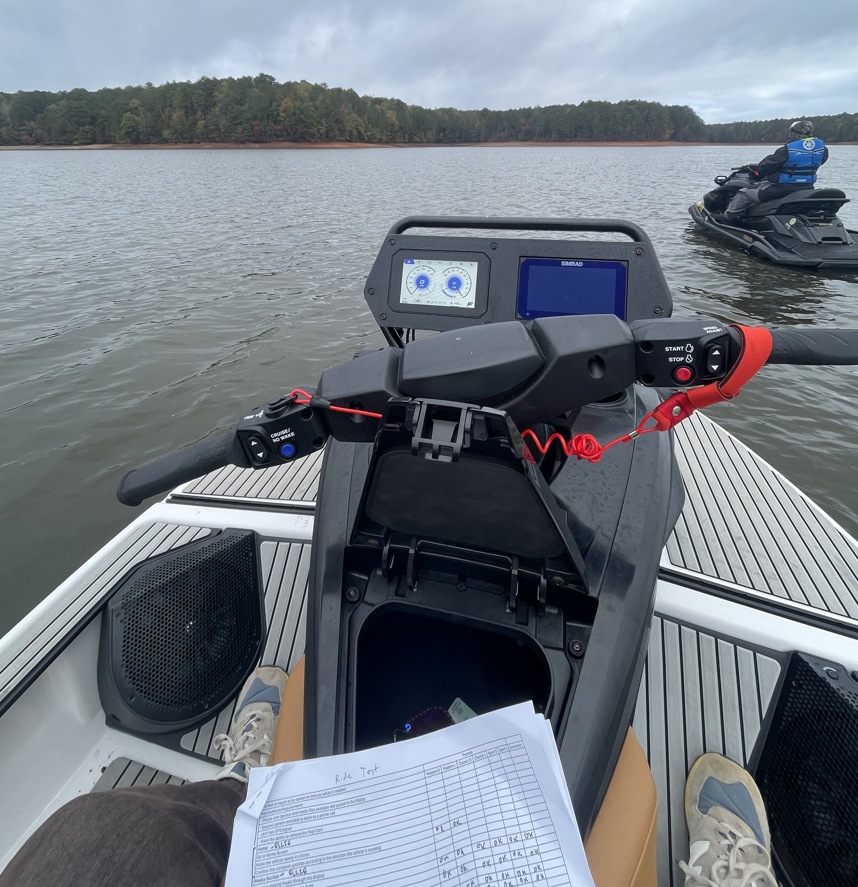
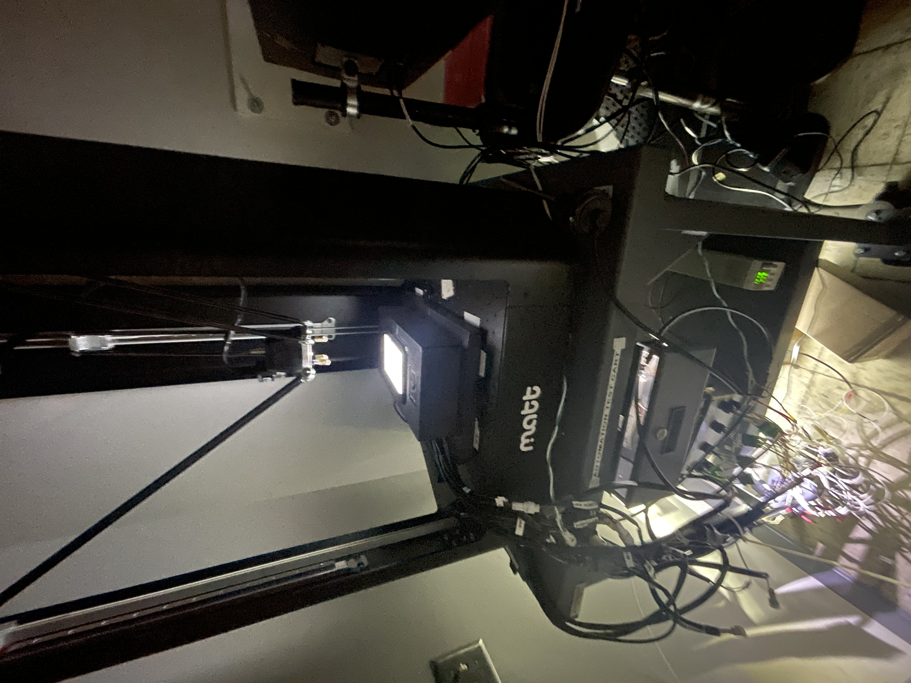
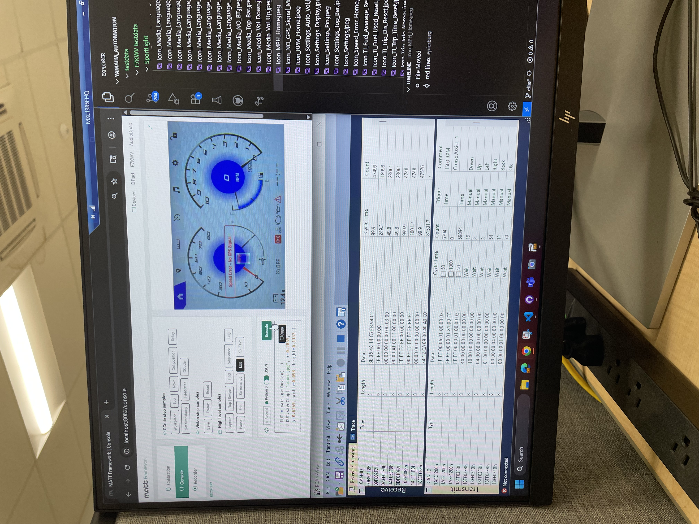

Infotainment Testing Automation

Role: Robotics / Mechatronics Co-op | Organization: Yamaha Motor Manufacturing Corporation of America
Duration: May 2025 — Present
Project Overview
Created automated validation code for Yamaha vehicle infotainment systems across three software platforms. The project reduced repetitive manual verification work, improved testing consistency, and established guidelines for future vehicle models.
Automation System
- Test target: Infotainment systems across three software platforms
- Automation language: Python
- Validation: Matt Framework automation robot used to simulate user interactions
- Interfaces: CAN, GPS testing equipment, and infotainment hardware
- Outputs: Automated results, logs, and failure information
My Contributions
Automated Test Development
- Developed more than 100 automated test cases for infotainment functionality, including settings and button behavior.
- Built repeatable test flows for infotainment features across three software platforms.
- Debugged test failures and improved validation consistency across different vehicle systems.
Automation Hardware & Integration
- Used the internal Matt Framework automation robot to simulate user interactions and validate screen behavior.
- Worked with CAN communication and GPS testing equipment during system validation.
- Designed and 3D-printed stands and fixtures for infotainment testing equipment.

AI-Assisted Testcase Generation
- Used Cursor AI to analyze an existing manually developed software-testing framework.
- Provided framework documentation and specifications so the tool could understand the testing architecture.
- Reviewed and modified generated code as needed rather than relying on unvalidated AI output.
- Generated a complete set of test cases for a new device, with most tests executing successfully with little modification.
Testing Process Improvement
- Contributed to testing guidelines intended to streamline validation for future vehicle models.
- Worked largely independently after the originally assigned teammate moved to another project.
Testing & Results
Reduced testing effort from approximately three 40-hour weeks of manual testing to approximately one 40-hour week with automation and remaining manual validation. The resulting process improved consistency and efficiency across infotainment validation and established guidelines for future vehicle models.
Skills & Tools
Python, Visual Studio Code, CAN, NX, Matt Framework automation robot, GPS testing equipment, 3D printing, hardware validation, test reporting.
Gallery & Files


